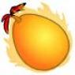
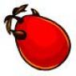
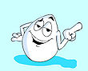

De: La Frikipedia, la enciclopedia extremadamente seria.
De: La Frikipedia, la enciclopedia extremadamente seria. De: La Frikipedia, la enciclopedia extremadamente seria.
.jpg/150px-muerto_3(2).jpg)
|
Muerto
El autor de este artículo, al parecer, se ha ido a una de sus citas al WC y suponemos que murió como el desdichado de aquí a la izquierda. Así que en su memoria, no seas cabrón, ponle más chorradas al artículo. |
| De la serie Superhéroes: | |||
| Huevoman | |||
| |||
| Nacimiento: | Avestruz + Mono | ||
| Muerte: | A manos de sus propios clones | ||
| Superpoderes: | ¡¡Ser un huevo!! | ||
| Debilidad: | El tocino | ||
| Asistente | Huevo Sonriente | ||
| Notas: | ¡¡Cabeza de huevo!! | ||
«¡¡¡HUEVOS!!!»
~ Huevoman dando a conocer su grito de guerra
«Santos huevos, huevo sonriente... mi sentido huevistico me indica que hay huevoproblemas»
~ Huevoman hablando su huevoidioma
Huevoman o como todos sus amigos lo conocen: 'Hombre Huevo' u 'Hombre Cojón', este es un superhuevonéroe que salva el crimén en "Huevo City" del los malignos gatitos sujetos que tratan de asesinar a toda la poblacion.
Huevoman fue engendrado por una avestruza prostituta infradesarrollada y un mono ornitofílico durante una noche loca. El nacimiento de Huevoman fue ligeramente extraño, del huevo de avestruz empezaron a salir unas manos y unas piernas por pura genética lógica, aunque aún no se ha comprendido de dónde salen los ojos y la boca.
Ya de niño lo pasó muy mal porque fue criado por un avestruz (todos sabemos que es lo peor que te puede pasar) y porque era rarito en el colegio de pollos de avestruz. Le decían que aún no había nacido, que se había quedado en huevo (con la frase "iba para mono-avestruz y me quedé en huevo").
En la adolescencia fue un joven un tanto marginado especial porque era muy inteligente (a pesar de ser una aberración), tan inteligente que fue capaz de hacer cientos de copias de sí mismo que le mataron y huyeron a formar Huevocity, una ciudad de Huevomen superinteligentes que planean destruir a todos los monos ornitofílicos. No tienen forma de reproducirse más que clonándose, pero fallos en las clonaciones desencadenan nuevas especies de Huevomen creando una fuerte división racial.
Los Huevomen se alimentan sólo de cosas transparentes o amarillas, al menos eso es lo que hemos deducido por los colores de su interior...
Aquí(o séase, abajo) se muestran los vagabundos personajes más conocidos y famosos de huevo city
| Foto | Nombre | Descripción del |
Le gusta / No le gusta | Palabra clave (más utilizada) |
|---|---|---|---|---|
|  | Huevo caliente | Huevo re |
Le gusta jugar furbo y cocinar tocino
No le gusta que lo usen para jugar furbo |
Me quemoooooooooooo... ¿que mas sigue?... ah si, ooooooooooooo |
|  | Huevo Diablo | Huevo un poco malvado, es enemigo de Huevo angel y se la vive haciendo bromas telefónicas de mal gusto | Le gusta hacer bromas telefónicas
No le gusta que le hagan bromas telefónicas |
¿Se encuentra pepe? |
|  | Huevo apuntador | Huevo que apunta | Le gusta apuntar
No le gusta Des-apuntar |
Huevowomen X, te elijo a ti, mañana tú, Y |
Cocedor de huevos: Malvado sujeto enemigo de huevoman y de todo huevo city, se la vive haciendo crimenes y crucigramas, se baña cada domingo y come cuando puede... pero su comida favorita son los Huevos revueltos.
Dr. Tocino: Sujeto loco, hace poco fue sacado del manicomio y fue metido ahi por comer huevos crudos.
Huevowoman: Nueva especie surgida de una clonación fallida, su único fin en la vida es tocarle los huevos a Huevoman.
Cuco: Son enemigos porque tienen el mismo trabajo, quitar los huevos de pájaros de sus nidos y porque los cucos confunden a los Huevomen con huevos de aves.
Aves en general: Matan a los Huevomen porque los ven como huevos de otras aves con las que compiten por la comida.
Reptiles: Matan a los Huevomen porque los ven como huevos de otros reptiles con los que compiten por la comida.
Peces: Matan a los Huevomen porque los ven como huevos de otros peces con los que compiten por la comida.
Huevoman es el nombre dado a todos los especímenes que cumplen lo de arriba, pero para ellos, Huevoman (con mayúscula) es el salvador del crimen en Huevocity. Este Huevoman es uno de los clones fallidos como otro cualquiera, pero éste con superpoderes. Sus superpoderes son:

|
Huevoman: ¿Hola? |

|
Autor(es):